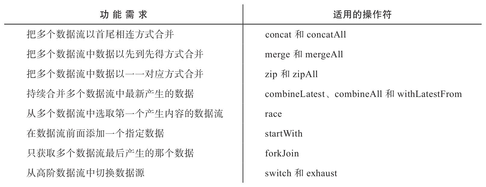

前一章介绍了如何创造一个Observable对象，Observable对象就是一条河流，不过单独一条河流或者一条小溪的流域不会很大，影响力也不会很大，真正有影响力的大江、大河必定是有多条河流汇聚而成，比如中华文明中非常重要的长江和黄河，而长江就有437条支流。
同样，在RxJS的世界中，为了满足复杂的需求，往往需要把不同来源的数据汇聚在一起，把来自多个Observable对象的数据合并到一个Observable对象中，这就是本章介绍的内容。
RxJS提供了众多操作符支持数据流合并，具体使用哪种操作符，要根据待解决的问题决定，下面列举了各种场景下适用的合并类操作符：
